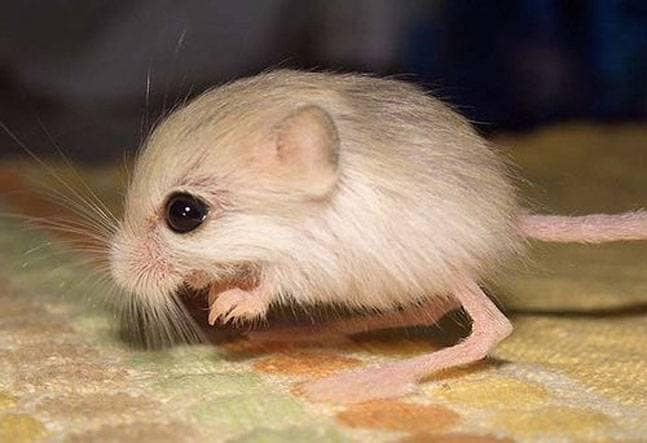

A desert-dwelling rodent with very long hind legs that enable it to walk upright and perform long jumps, found from North Africa to central Asia.
| Kingdom | Phylum | Class | Order | Superfamily | Family |
|---|---|---|---|---|---|
| Animalia | Chordata | Mammalia | Rodentia | Dipodoidea | Dipodidae |
Most jerboas rely on plant material as the main component of their diet, but they cannot eat hard seeds. Some species opportunistically eat beetles and other insects they come across.
 source 1 source 2